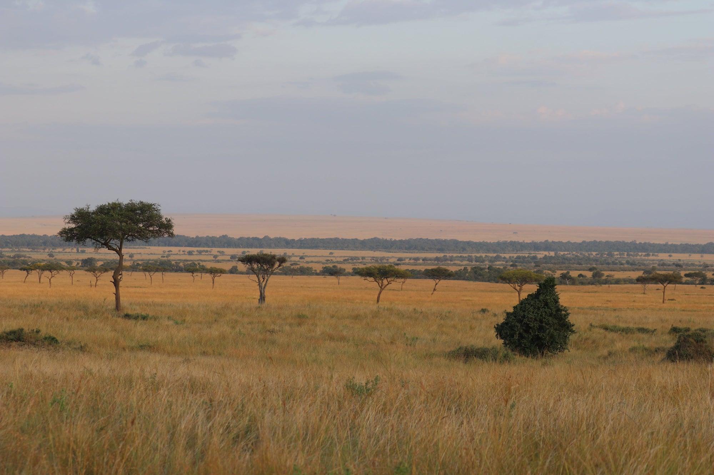

Research
I focus on innovative forms of financing sustainable economic development, from impact investing to agricultural finance. I also study agricultural markets, with a focus on smallholder farmer value chains in East Africa.

Peer-reviewed Publications
Working Papers
Bad News Travel Fast … and Decrease Credit Supply in Peer-to-Peer Lending
Using a new dataset of transactions on a Dutch peer-to-peer lending platform, I investigate the stability of credit supply when investors experience repayment delays. I exploiting a natural experiment, where some investors experience repayment delays in impact investment loans and show that the delays cause affected investors to decrease their credit supply by 206€ on average, resulting in a shortage of credit of almost 400,000€ to borrowers unconnected to the delays. Repayment delays thus have substantial negative externalities on the ability of firms to raise capital through the peer-to-peer lending platform.
Ripe for Contract? Avocado contract farming in Kenya improves agricultural investments, knowledge and prices. Link to working paper and to presentation
We evaluate the impact of a multi-layered contract farming intervention that connected smallholder farmers in central Kenya to avocado exporting companies, provided training in good agricultural practices and certified farmer organizations according to the global good agricultural practices (GAP) production standard. Using panel data from 2015 and 2017 we show that the intervention was successful at delivering its immediate goals. It increased the share of farmers that sold to companies, were recently trained and received the GAP certification. Contract farming significantly improved the sales prices of farmers, and knowledge of avocado-farming practices and led to increased investments into the Hass avocado variety which is in higher demand in export markets. We find suggestive, albeit not statistically significant, evidence that contract farming improved farmer income and shifted labour from family to hired labour. At the same time, contract farmers produced less of the local avocado variety, leading to a significant decrease in total quantity sold during the transition to the export-oriented Hass avocado variety. We contribute to the literature by quantifying the impact of a multi-layered contract farming intervention. Panel data allows us to estimate a doubly-robust difference-in-differences design, giving us more confidence to interpret our estimates as causal evidence of contract farming than traditional cross-sectional studies allow for.